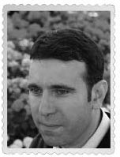

Zafer
Zafer Erbaşlar, kitaptaki tiplemesine benzemeyen tek kişi aslında. Kitap ilerledikçe tipi, karakteri, organlarının yeri dâhil hepsi değişti; kitabın gidişine uymak zorunda kaldı. (Pırt yapmaz.)
Zafer uzun boylu, yakışıklı, süper bir adamdır. Şimdi kırk üç yaşında. Dostluğun, arkadaş olmanın hayattaki en asil örneğidir. Bu nedenle bu kitapta yer aldı. Bursa’da yaşar, İzgören Akademi’nin Bursa Bölge Müdürü’dür Bönbön. Ona “Hamitler Mah. Mudanya Yolu Cad. 3 Barış Sok. Ömeroğlu İş Merkezi B Blok Kat:1 D:2 16160 Osmangazi-Bursa” adresinden ulaşabilirsiniz. Yolunuz düştüğünde uğrar, bir çayını içerseniz çok sevinir. İş yeri telefonu (0224) 243 99 15, “Bönbön’le görüşebilir miyim?” dediğinizde o anlar.
